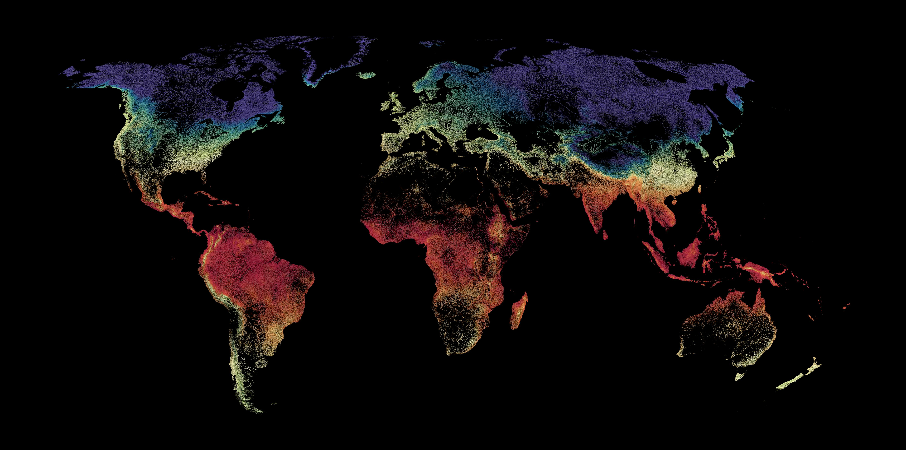
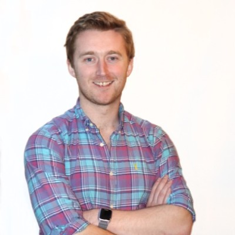

I create bespoke map visualisations for publishers, researchers, brands, and institutions. My work has been featured in Visual Capitalist, the World Economic Forum, Maps.com and the Daily Mail.
Every technique behind these maps, written down. Geospatial Visualisation with Python, published by Locate Press in 2025.
Locate Press →Every map starts with a question: what does this data actually look like, and who needs to see it? I build each one from the raw sources, with a projection and palette chosen for the job, and deliver it at the resolution it will be printed or published. The result is a single image that carries a dataset a lot further than a chart can.
Commissioned by journalists, publishers, authors, researchers, and communications teams — with work that has appeared in national press and peer-reviewed publications.
Maps for books, magazines, and digital publications, built to sit in print or carry a story online and delivered at publication resolution.
Thematic maps for reports, campaigns, and launches, made with the same care as the work above.
Figures for papers, government reports, and NGO communications that hold up under scrutiny and still stop a reader.
A few organisations that publish maps regularly work with me on an ongoing basis rather than commission by commission. If your team puts out data-driven work on a steady cadence, mention it when you write.
Tell me three things and I'll come back with a quote: the dataset (or a link to where it lives), the format you need — print, web, or social, and roughly what size — and your deadline.

I trained as a computational chemist, earning a PhD from the University of Bath where I used machine learning to predict how materials behave. Somewhere along the way I started mapping data for the pleasure of the problem, and in 2020 that turned into PythonMaps.
Since then I have spent eight years working as a data scientist in industry and made more than eighty maps. I have written seventeen peer-reviewed papers, three of them on open-source software, along with a book on the subject. My maps have been featured by Visual Capitalist, the World Economic Forum, and Maps.com, and are followed by over a hundred thousand people on X and Instagram.
If you have data worth looking at properly, get in touch.